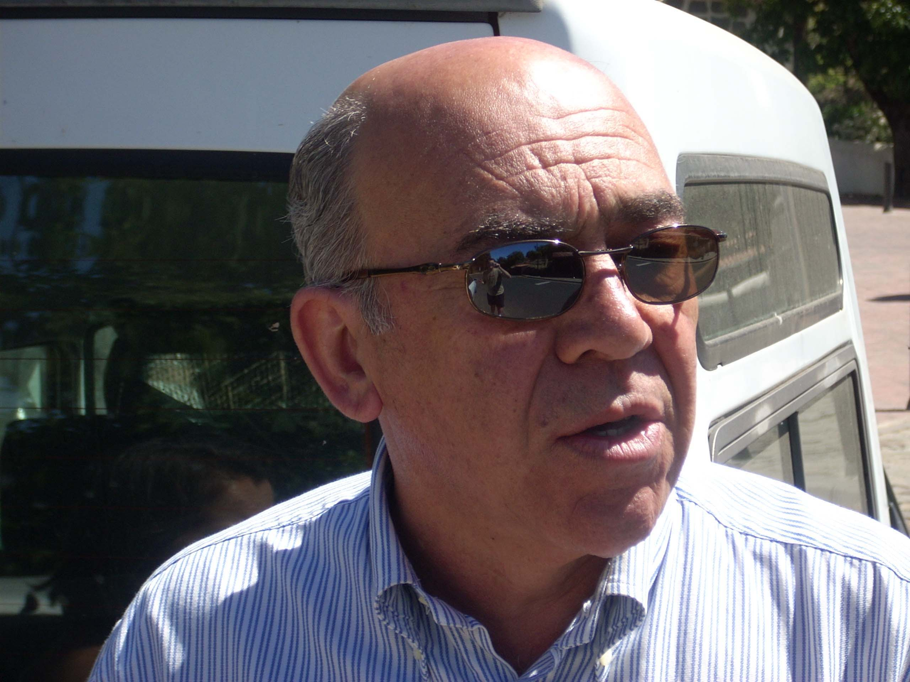

Frases del escritor

Ser padre es una golosina de Dios.
No es que la noche sea oscura, es que no vemos más allá en la traición.
La vida es una guerra con tambores de hojalata.
No espero de la literatura otra cosa que las huellas que van dejando las grafías en mi alma.
La envidia es un perro rabioso y la mezquindad una telaraña de hiel.
Siempre la amistad se sume por las alcantarillas.
Cuando me muera, siénteme si puedes, pero no me llores, por Dios.
¿Los obeliscos pueden escribir con el vértice de su pirámide? Me imagino que si lo hacen usarán el cielo como cuaderno.
No dan asco las miserias humanas, sino los egoísmos.
Las cosas son porque el corazón está.
La vida es hermosa cuando la mente ayuda.
Ay, de la mujer que no quiere hacer hijos para el mundo.
La escultura más hermosa es el cuerpo vivo de una mujer desnuda.
Si han de hablar, que sea para bien; y si no, espera, que siempre suena el bombo cuando lo golpea la maza.
Quien toca en mi puerta es mi amigo, porque los enemigos la echarían al suelo.
Uno no se cierra a sí mismo la puerta de su casa si quiere entrar.
El brillo material deslumbra los sentimientos, y los apaga.
Con la poesía te emborrachas rebuscando palabras en la oscuridad que después no valen para nada a la luz del día.
La debilidad de los hombres siempre asoma por los ojos o por el trasero.
La soledad es la nada que respira.
No hay peor idiota que aquel que pretende alcanzar el poder sobre un atajo de imbéciles.
El amor: soldado admirable mientras viste uniforme.
Cuando se empieza a estar mejor dormido que despierto pocas cosas deben importar
ya.
El tiempo es una espada que no se envaina.
La edad es un tren que tiene una sola estación.
¡Tristes amores si son para sufrir!
El amor no sólo confunde a los hombres, sino que los hace vulnerables y los convierte un poco en seres idiotas.
La amistad es un rincón de lo imposible entre dos seres humanos, pero a veces existe.
Las buenas y bonitas palabras no bastan, son las actitudes las que hacen felices a las personas.
Hay amantes más libres en su amor escondido que amados que se han olvidado de serlo.
Los perros ladran o meten el rabo entre las patas, pero los hombres no pueden hacer ninguna de las dos cosas, si son hombres, porque los hombres lo único que pueden hacer es tomar decisiones.
El sexo es la defenestración del amor.
¿Se puede matar al amor? No: el amor se muere solo, no necesita que nadie lo mate.
La memoria de los hombres se convierte muchas veces en largas espinas clavadas en el alma.
El amor no se puede conducir, porque es un viajero loco y solitario, que en ocasiones toma el camino del precipicio.
Escribir es vivir a solas para los demás, entonces un acto inmenso de bondad.
Tú tienes que querer a quien te quiera.
La mejor vida es la de un ignorante de la vida.
No es lo mismo emprender el camino cargado y en soledad que cargado y bien acompañado por el pensamiento y la palabra.
¿No es más feliz el loco en su aparente cordura que el cuerdo en su locura diaria?
Sólo el amor inspira la vida.
La libertad está allá donde hay felicidad.
El mundo se halla donde uno quiera imaginarlo.
No es la edad la que nos hace viejos, sino la falta de ilusión y sensibilidad.
Es el amor quien alimenta los verdaderos pálpitos de la vida
No por hablar mucho se es más escuchado.
Meo y hasta pienso cuando lo hago, luego meo y existo.
No
basta con amarse para ser feliz.
Una pata sola no recorre todo el camino.
La vida no se deja dominar por el amor.
Si la vida se dejara dominar por el amor no habría guerras en el mundo.
Las batallas en el amor se ganan por detalles, en las guerras de verdad se ganan
por el pensamiento.
La música a veces provoca felicidad, en otras resulta un martirio.
La vida es un contratiempo perenne, y cuando deje de serlo ya no es vida.
El sexo mueve el mundo, si no hubiera sexo el mundo estaría muerto.
Al amor se llega por diversos caminos, como a Dios, si existe.
Vivamos el amor que el futuro lo dicta el tiempo.
La prudencia es una batalla ganada de antemano.
Al talento no se le discrimina.
Todos los caminos son de antes.
No me reproches las canas, que son mi vida.
El animal no tiene otro dios que el amo, y a veces es el mismo diablo.
Al cielo se llega en calzoncillos, y a veces durante el camino te los quitan.
Cuando me muera no me llores: ámame.
Cada uno es carta de su baraja.
No hay huella sin pasado, ni paso sin futuro.
Se llora lo que se quiere, no lo que se ignora.
Si me miras, te miro, y nos miramos.
Sólo la evidencia enseña, porque lo que se oculta no se aprende, sino
que confunde.
No hay mayor esclavo que el quiere serlo.
El tiempo, justiciero inseparable de la vida, siempre dice lo que estuvo bien y
lo que estuvo mal.
La información no hace daño, la ignorancia sí.
La vida son hechos, no percepciones, aunque también.
A veces es tarde para casi todo, menos para la muerte que nos acecha.
Hay millones de humanos que tienen libertad y les sobra cárcel vital.
No dejo de ser un perdedor para preservar mi dignidad, que es muy valiosa.
Nunca me fijo en tus canas sino en tus ojos, porque me dicen tu amor.
La soledad no es tal cuando va equipada de buenos recuerdos.
La mejor espada es el pensamiento.
Siempre es una duda el amor, pero la más hermosa de las dudas.
La suerte hay que trabajarla y entonces deja de ser suerte.
Nadie que no sea un estúpido habla de la estupidez de los demás.
Sólo cuando escribo el mundo queda a mis pies.
Siempre es hora de pensar.
La vida es un escaparate sin limpiar.
Cuando miro al sol y no te veo pienso que ya ha llegado la noche.
Si acostumbras a no escuchar recuerda cuánto tienes de animal.
No busques en el pasado lo que no has podido llegar a ser en el presente.
Pierde lo que quieras, pero nunca la dignidad.
Si andas los pasos de los demás no esperes divisar tu huella.
La virginidad perpetua es la sinrazón de la existencia.
Mira siempre hacia delante y de reojo atrás, pero sólo de reojo.
No sé por qué siendo la felicidad tan fácil de conseguir es así de efímera.
¿Para qué quieres estar cerca de mí cuando esté muerto? Procura estarlo ahora que estoy vivo y te amo.
El amor es compañero inseparable del sufrimiento.
En la vida todas las cartas están marcadas, por más que intentes evitarlo.
El amor está hecho para conocer lo que es el desamor.
La naturaleza es la mayor expresión del arte.
Cuando la envidia nace corrompe a la persona.
El arte siempre está en la naturaleza, por innovador que sea.
Ay, jugador vicioso, cuándo has visto disparar a un cazador sin liebre a la vista.
No busques la huella de mi luz amorosa cuando el corazón se me haya apagado.
Tu desnudez habla por ti para mí, no lo dudes.
Escribir es comunicar con belleza, o nada.
¡Es que salen callos al amor si lo silencias.
Cada uno coge el tren de su vida, aunque casi nunca para en la estación de los deseos.
Quise morirme, y ya hacía tiempo que era una simple estatua de carne.
¡Mi pequeño dios ni marcha ni convive con los mezquinos!
Las arenas son movedizas en las cosas del amor.
La vida no deja de ser una casualidad.